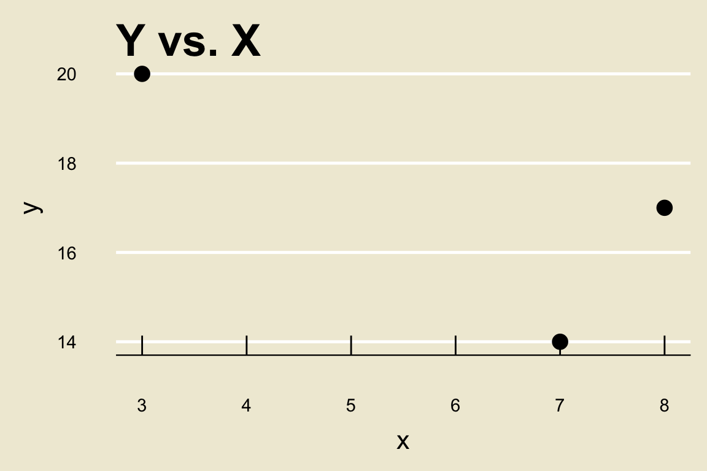

set.seed(123)
data.frame(x = c(3, 7, 8), y = c(20, 14, 17)) %>%
ggplot(aes(x = x, y = y)) +
geom_point(size = 4) +
theme_economist(base_size = 24) +
ggtitle("Y vs. X") +
theme(panel.background = element_rect("#f0ebd8"),
plot.background = element_rect(fill = "#f0ebd8"),
axis.title.y = element_text(size = 16,
margin = margin(
t = 0,
r = 10,
b = 0,
l = 0)),
axis.title.x = element_text(size = 16,
margin = margin(
t = 10,
r = 0,
b = 0,
l = 0)),
title = element_text(size = 18)
) +
ylab("y") +
xlab("x")